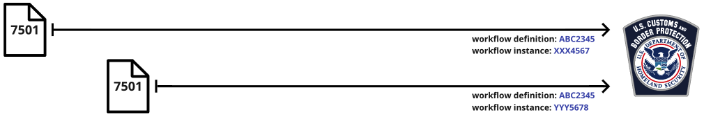

Workflows
Workflows are a critical concept in this specification that enable presenters to correlate individual presentations. A workflow definition can be used to indicate that presentations relate to the same type of workflow.
Workflow instances indicate that separate individual presentations are part of the very same workflow.
Workflows for US Customs and Border Protection (US CBP)
In the above example, two separate 7501 Entry Summaries are submitted to US CBP at different points in time, and related to different imports. By specifying the same workflow definition, it is made clear to US CBP that both relate to the same type of import workflows.

The majority of data elements in a "10+2" Importer Security Filing must be presented to CBP no later than 24 hours before vessel loading, and the remaining data elements no later than 24 hours before arrival. Specifying the same workflow instance indicates to US CBP that the two presentations are part of the same import workflow.
A workflow definition indended for use with US CBP imports MUST have a corresponding plain text manifest document that may be uniquely identified, referenced, and retrieved by a third party in a publicly accessible and documented manner by the UUID of the workflow definition.
This workflow manifest document MUST list each required credential from the Traceability Vocabulary , one per line, and identified by the "type" of credential, for the workflow to be considered "complete". Completeness in this sense refers to an optimal state where all possible information that can be provided in relation to that workflow definition is present.
Following the credential "type" a space, followed by a numeric value that ranges from 0 to 1 MAY be added. If this value is not provided a value of 1 MUST by inferred by any system using this property. This numeric value MUST be referred to as "weight", and may be utilized to calculate a weighted average indicating the completeness of a particular workflow instance.
The standard calculation for weighted averages and algorithm for calculating this weighted average indicating the completeness of available information should be described, along with examples.
Stakeholders at US CBP should be consulted to determine if this weighted average SHOULD, MUST, or MAY be included with each traceable presentation.